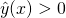
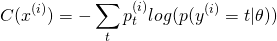

This article covers logistic regression - arguably the simplest classification model in machine learning; it starts with basic binary classification, and ends up with some techniques for multinomial classification (selecting between multiple possibilities). The final examples using the softmax function can also be viewed as an example of a single-layer fully connected neural network.
This article is the theoretical part; in addition, there's quite a bit of accompanying code here. All the models discussed in the article are implemented from scratch in Python using only Numpy.
Linear model for binary classification
Using a linear model for binary classification is very similar to linear regression, except that we expect a binary (yes/no) answer rather than a numeric answer.
We want to come up with a parameter vector  , such that for every
data vector x we can compute [1]:
, such that for every
data vector x we can compute [1]:
And then make a binary decision based on the value of  . A
simple way to make a decision is to say "yes" if and
"no" otherwise. Note that this is arbitrary, as we could flip the condition for
"yes" and for "no". We could also compare to some value other
than zero, and the model would learn equally well [2].
. A
simple way to make a decision is to say "yes" if and
"no" otherwise. Note that this is arbitrary, as we could flip the condition for
"yes" and for "no". We could also compare to some value other
than zero, and the model would learn equally well [2].
Let's make this more concrete, also assigning numeric values to "yes" and "no",
which will make some computations simpler later on. For "yes" we'll (again,
arbitrarily) select +1, and for "no" we'll go with -1. So, a linear model for
binary classification is parameterized by some , such that:
And:
It helps seeing a graphical example of how this looks in practice. As usual, we'll have to stick to low dimensionality if we want to visualize things, so let's use 2D data points.
Since our data is in 2D, we need a 3D ( for the
bias). Let's pick . Plotting will give us a plane in 3D, but what we're really interested in is just
to know whether . So we can draw this plane's
intersection with the x/y axis:
We can play with some sample points to see that everything "to the right" of
the line gives us , and everything "to the left" of
it gives us  [3].
[3].
Loss functions for binary classification
How do we find the right for a classification problem? Similarly
to linear regression, we're going to define a "loss function" and then train a
classifier by minimizing this loss with gradient descent. However, here picking
a good loss function is not as simple - it turns out square loss doesn't work
very well, as we'll see soon.
Let's start by considering the most logical loss function to use for classification - the number of misclassified data samples. This is called the 0/1 loss, and it's the true measure of how well a classifier works. Say we have 1000 samples, our classifier placed 960 of them in the right category, and got the wrong answer for the other 40 samples. So the loss would be 40. A better classifier may get it wrong only 35 times, so its loss would be smaller.
It will be helpful to plot loss functions, so let's add another definition we're
going to be using a lot here: the margin. For a given sample x, and its
correct classification y, the margin of classification is
. Recall that y is either +1 or -1, so the margin
is either or its negation, depending on the correct answer.
Note that the margin is positive when our guess is correct (both
and y have the same sign) and negative when our guess is
wrong. With this in hand, we define 0/1 loss as:
![\[L_{01}(m) = \mathbb{I}(m \leq 0)\]](../../images/math/e9731883ade0db9b166741b2ff53a8167a8e3ffd.png)
Where is an indicator function taking the value 1 when its condition is true and the value 0 otherwise. Here is the plot of as a function of margin:
Unfortunately, the 0/1 loss is fairly hostile to gradient descent optimization,
since it's not convex. This is easy to see intuitively. Suppose we have some
that gives us a margin of -1.5. The 0/1 loss for this margin is
1, but how can we improve it? Small nudges to will still give us
a margin very close to -1.5, which results in exactly the same loss. We don't
know which way to nudge since either way we get the same outcome.
In other words, there's no slope to follow here.
That's not to say all is lost. Some work is being done with optimizing 0/1 losses for classification, but this is a bit outside the mainstream of machine learning. Here's an interesting paper that discusses some approaches. It's fascinating for computer science geeks since it uses combinatorial search techniques. The rest of this post, however, will use 0/1 loss only as an idealized limit, trying other kinds of loss we can actually run gradient descent with.
The first such loss that comes to mind is square loss, the same one we use in linear regression. We'll define the square loss as a function of margin:
![\[L_2(m) = (m - 1)^2\]](../../images/math/ea06356db44999485977e3a7e6ff5e97e617b1bb.png)
The reason we do this is to get two desired outcomes at important points: at we want the loss to be 0, since this is actually the correct classification: we only get when either both and or when both and .
Furthermore, to approximate the 0/1 loss, we want our loss at to be 1. Here's a plot of the square loss together with 0/1 loss:
A couple of problems are immediately apparent with the square loss:
- It penalizes correct classification as well, in case the margin is very positive. This is not something we want! Ideally, we want the loss to be 0 starting with and for all subsequent values of m.
- It very strongly penalizes outliers. One sample that we misclassified badly can shift the training too much.
We could try to fix these problems by using clamping of some sort, but there is another loss function which serves as a much better approximation to 0/1 loss. It's called "hinge loss":
And its plot, along with the previously shown losses:
Note that the hinge loss also matches 0/1 loss on the two important points: and . It also has some nice properties:
- It doesn't penalize correct classification after .
- It penalizes incorrect classifications, but not as much as square loss.
- It's convex (at least where it matters - where the loss is nonzero)! If we get we can actually examine the loss in its very close vicinity and find a slope we can use to improve the loss. So, unlike 0/1 loss, it's amenable to gradient descent optimization.
There are other loss functions used to train binary classifiers, such as log loss, but I will leave them out of this post.
This is a good place to mention that hinge loss leads naturally to SVMs (support vector machines), an interesting technique I'll leave for some other time.
Finding a classifier with gradient descent
With a loss function in hand, we can use gradient descent to find a good classifier for some data. The procedure is very similar to what we've been doing for linear regression:
Given a loss function, we compute the loss gradient with respect to each
and update for the next step:
Where  is the learning rate.
is the learning rate.
Computing gradients for our loss functions, with regularization
The only missing part remaining is computing the gradients for the square and loss hinge functions we've defined. In addition, I'm going to add " regularization" to the loss as a means to prevent overfitting for the training data. Regularization is an important component of the learning algorithm. regularization adds the sum of the squares of all parameters to the loss, and thus "tries" to keep parameters low. This way, we don't end up over-emphasizing one or a group of parameters over the others.
Here is square loss with regularization [4]:
This is assuming we have k data points (n+1 dimensional) and n+1 parameters (including the special 0th parameter representing the bias). The total loss is the square loss averaged over all data points, plus the regularization loss. is the regularization "strength" (another hyper-parameter in the learning algorithm).
Let's start by computing the derivative of the margin. Using superscripts for indexing data items, recall that:
Therefore:
With this in hand, it's easy to compute the gradient of loss.
Now let's turn to hinge loss. The total loss for the data set with regularization is:
The tricky part here is finding the derivative of the function with respect to . I find it easier to reason about functions like when the different cases are cleanly separated:
We already know the derivative of  with respect to
. So it's easy to derive this expression case-by-case:
with respect to
. So it's easy to derive this expression case-by-case:
And the overall gradient of the hinge loss is:
Experiments with synthetic data
Let's see an example of learning binary classifier in action. This code sample generates some synthetic data in two dimensions and then uses the approach described so far in the post to train a binary classifier. Here's a sample data set:
The data points for which the correct answer is positive (y=1) are the green crosses; the ones for which the correct answer is negative (y=-1) are the red dots. Note that I include a small number of negative outliers (red dots where we'd expect only green crosses to be) to test the classifier on realistic, imperfect data.
The sample code can use combinatorial search to find a "best" set of parameters that results in the lowest 0/1 loss - the lowest number of misclassified data items. Note that misclassifying some items in this data set is inevitable (with a linear classifier), because of the outliers. Here is the contour line showing how the classification decision is made with parameters found by doing the combinatorial search:
The 0/1 loss - number of misclassified data items - for this set of parameters is 20 out of 400 data items (95% correct prediction rate).
Next, the code trains a classifier using square loss, and another using hinge loss. I'm not using regularization for this data set, since with only 3 parameters there can't be too much selective bias between them; in other words, .
A classifier trained with square loss misclassifies 32 items (92% success rate). A classifier trained with hinge loss misclassifies 26 items (93.5% success rate, much closer to the "perfect" rate). This is to be expected from the earlier discussion - square loss very strongly penalizes outliers, which makes it more skewed on this data [5]. Here are the contour plots for all losses that demonstrate this graphically:
Binary classification of MNIST digits
The MNIST dataset is the "hello world" of machine learning these days. It's a database of grayscale images representing handwritten digits, with a correct label for each of these images.
MNIST is usually employed for the more general multinomial classification problem - classifying a given data item into one of multiple classes (0 to 9 in the case of MNIST). We'll address this in a later section.
Here, however, we can experiment with training a binary classifier on MNIST. The idea is to train a classifier that recognizes some single label. For example, a classifier answering the question "is this an image of the digit 4". This is a binary classification problem, since there are only two answers - "yes" and "no".
Here's a code sample that trains such a classifier, using the hinge loss function (since we've already determined it gives better results than square loss for classification problems).
It starts by converting the correct labels of MNIST from the numeric range 0-9 to +1 or -1 based on whether the label is 4:
0 -1
1 -1
4 1
9 -1
y = 3 ==> -1
8 -1
5 -1
...
4 1
Then all we have is a binary classification problem, albeit one that is 785-dimensional (784 dimensions for each of the 28x28 pixels in the input images, plus one for bias). Visualizing the separating contours would be quite challenging here, but we can now trust the math to know what's going on. Other than this, the code for gradient descent is exactly the same as for the simple 2D synthetic data shown earlier.
My goal here is not to design a state-of-the-art machine learning architecture, but to explain how the main parts work. So I didn't tune the model too much, but it's possible to get 98% accuracy on this binary formulation of MNIST by tuning the code a bit. While 98% sounds great, recall that we could get 90% just by saying "no" to every digit :-) Feel free to play with the code to see if you can get even higher numbers; I don't really expect record-beating numbers from this model, though, since it's so simple.
Logistic regression - predicting probabilities
So far the predictors we've been looking at were trained to return a binary yes/no response; a more useful model would also tell us how sure it is. For example "what is the chance of rain tomorrow", rather than "will there be rain, yes or no"? The probability gives additional information. "90% chance of rain" vs. "56% chance of rain" gives us additional information over the binary "yes" for both cases (assuming a 50% cutoff).
Moreover, note that the linear model we've trained actually provides more information already, giving a numerical answer. We choose to cut it off at 0, saying yes for positive and no for negative numbers. But some numbers are more positive (or negative) than others!
Quick thought experiment: can we somehow interpret the response before cutoff as probability? The main problem here is that probabilities must be in the range [0, 1], while the linear model gives us an arbitrary real number. We may end up with negative probabilities or probabilities over 1, neither of which makes much sense. So we'll want to find some mathematical way to "squish" the result into the valid [0, 1] range. A common way to do this is to use the logistic function:
It's also known as the "sigmoid" function because of its S-like shape:
We're going to assign into the z variable of the sigmoid,
to get the function:
And now, the answer we get can be interpreted as a probability between 0 and 1 (without actually touching either asymptote) [6]. We can train a model to get as close to 1 as possible for training samples where the true answer is "yes" and as close to 0 as possible for training samples where the true answer is "no". This is called "logistic regression" due to the use of the logistic function.
Training logistic regression with the cross-entropy loss
Earlier in this post, we've seen how a number of loss functions fare for the binary classifier problem. It turns out that for logistic regression, a very natural loss function exists that's called cross-entropy (also sometimes "logistic loss" or "log loss"). This loss function is derived from probability and information theory, and its derivation is outside the scope of this post (check out Chapter 3 of Michael Nielsen's online book for a nice intuitive explanation for why this loss function makes sense).
The formulation of cross-entropy we're going to use here starts from the most general:
Let's unravel this definition, step by step. The parenthesized superscript
 denotes, as usual, the ith input sample. t runs over all the
possible outcomes; is the actual probability of outcome t and
inside the log we have the conditional probability of this outcome given the
regression parameters - in other words, this is the model's prediction [7].
denotes, as usual, the ith input sample. t runs over all the
possible outcomes; is the actual probability of outcome t and
inside the log we have the conditional probability of this outcome given the
regression parameters - in other words, this is the model's prediction [7].
To make this more concrete, in our case we have two possible outcomes in the training data: either or . Given any such outcome, its "actual" probability is either 1 (when we get this outcome in the training data) or 0 (when we don't). So for any given sample, one of the two possible values of t has and the other has . Therefore, we get [8]:
The second possibility has because we define to predict the probability of the answer being +1; therefore, the probability of the answer being -1 is .
This is the cross-entropy loss for a single sample . To get the
total loss over a data set, we take the average sample loss, as usual:
Now let's compute the gradient of this loss function, so we can use it to train a model. Starting with the +1 case, we have:
Then:
Here it will be helpful to use the following identity, which can be easily verified by going through the math [9]:
Since in our case is actually where , we can apply the chain rule:
Substituting back into , we get:
Similarly, for we can compute:
Putting it all together, we find that the contribution of to the
gradient of is:
Using these formulae, we can train a binary logistic classifier for MNIST that gives us a probability of some input image being a 4, rather than a yes/no answer. The binary MNIST code sample trains either a binary or a logistic classifier using a lot of shared infrastructure.
The probability gives us more information than just a yes/no answer. Consider, for example the following image from the MNIST database. When I trained a binary classifier with hinge loss to recognize the image 4 for 1200 steps, it wrongly predicted it is a 4:
The model clearly made a mistake here, but can we know how wrong it was? It would be hard to know with a binary classifier that only gives us a yes/no answer. However, when I run a logistic regression model on the same image, it tells me it is 53% confident this is a 4. Since our cutoff for yes/no is 50%, this is quite close to the threshold and thus I'd say the model didn't make a huge mistake here.
Multiclass logistic regression
The previous example is a great transition into the topic of multiclass logistic regression. Most real-life problems have more than one possible answer and it would be nice to train models to select the most suitable answer for any given input.
Our input is still a vector x, but now instead of assigning +1 or -1 as the answer, we'll be assigning one of a fixed set of classes. If there are T classes, the answer will be a number in the closed range [0..T-1].
The good news is that we can use the building blocks developed in this post to put together a multiclass classifier. There are many ways to do this; here I'll focus on two: one-vs-all classification and softmax.
One-vs-all classification
The One-vs-all (OvA), also known as one-vs-rest (OvR) approach is a natural extension of binary classification:
- For each class we train a logistic classifier where we set t as the "correct" answer, and the other classes as the "incorrect" answers (+1 and -1 respectively).
- The result of each such classifier is the probability that an input sample belongs to class t.
- Given a new input, we run all T classifiers on it and the one that gives us the highest probability is chosen as the true class of the input.
As a completely synthetic example to make this clearer, suppose that T=3. We take the training data and train 3 logistic regressions. In the first - , we set 0 as the right answer, 1 and 2 as the wrong answers. In the second - we set 1 as the right answer, 0 and 2 as the wrong answers. Finally in the third - we set 2 as the right answer, 0 and 1 the wrong answers.
Now, given a new input vector x we run , and . Each of these gives us the probability of x belonging to the respective class. If we put all the classifiers in a vector, we get:
We pick the class where the probability is highest. Mathematically, we can use the argmax function for this purpose. argmax returns the index of the maximal element in the given vector. For example, given:
We get:
Therefore, the chosen class is 0. These class/index numbers are just labels of course. They can stand for anything depending on the problem domain: medical condition names, digits and so on.
This approach doesn't require any additional math over what we've already covered in this post. This multinomial MNIST classifier code sample implements it. The error rate it achieves is ~11%, similar to what LeCun's 1998 paper achieved with a simple linear classifier. Much better than 11% can be done for MNIST, even with a single-layer linear model. However, my model is very far from the state of art - there's no preprocessing, no artificially-enlarged training set, no adaptive learning rate; I didn't even spend time tuning the hyperparameters (regularization type and constants, learning rate, batch size etc.) The goal here was just to demonstrate the basics of logistic regression, not to compete for the state of the art in MNIST.
Softmax
An alternative to OvA is to use the softmax function. I covered softmax in some detail previously; just briefly, softmax is a function such that:
It is very useful for multiclass classification, since it lets us generate probabilities of the input belonging to one of N classes. Similarly to the OvA case, here we have to train 10 different parameter vectors, one for each digit. However, unlike OvA, this training doesn't happen separately but occurs at the same time. Instead of training a model to find a single parameter vector each time, we train a parameter matrix once.
The model structure is as follows:

I've chosen the number of classes to be 10 to reflect MNIST where we have 10 possible digits to assign to every input. In MNIST N is 785 (784 for each of 28x28 pixels in the image, plus one for bias). "Logits" is a common name to assign to the output of a fully connected layer (which is what we have with the matrix-vector multiplication in the first stage); the logits are arbitrary real numbers. The softmax function is responsibe for squeezing them into the range of probabilities (0, 1) and making sure they all add up to 1.
This diagram shows what happens to a single input as it goes through the model. In a realistic program, there will be another dimension - the batch dimension, used to vectorize the computation over a whole batch of inputs.
For training this model, we need a loss function. It turns out cross-entropy is a very popular loss function to use for softmax. In the softmax post I also covered how to compute the gradient of cross-entropy on a softmax, so we're all set to write some code: the full sample is here. Running it on MNIST for a couple of minutes produces a 9.5% error rate - slightly better than the OvA approach, but very close. This is to be expected, since OvA and softmax compute very similar results (finding the maximal probability from a set of probabilities), just in a different way. Softmax regression is much faster, however, since we can vectorize the training for all 10 digits in the same run.
| [1] | In this post I'm following many of the conventions established in my post on linear regression. In particular, by construction so that is the bias. |
| [2] | Why? Because we have the bias as part of the model, so any constant offset can be absorbed into the learned bias. |
| [3] | Note that this outcome is, once again, somewhat arbitrary. We could find
another plane that intersects the x/y axis on the same line, and get
a different classification. For example, if we flip the sign of all the
elements of , we get the same intersection line. In that
case, however, values "to the right" of the line give us
. Since the labels we attach are arbitrary, this
really makes no difference. The only important thing is that we find
a line that separates "true" from "false" samples and be consistent with
our signs and labels throughout the process. |
| [4] | Note that both the loss and the regularization are called . This is a bit confusing, but both are essentially 2nd norms. It's best to ignore the name of the regularization factor and just refer to it as "regularization". I thought it's important to mention initially as there are other kinds of regularization being used for machine-learning algorithms and I wanted to make it clear which one is being used here. |
| [5] | As an exercise, play with the code to increase or decrease the number of outliers (the code makes it easily controllable), and observe the effects on the misclassification rates of the different loss functions. |
| [6] | Note that using the logistic function on the model's output is strictly a generalization of the binary classifier. We can still make a binary interpretation of the result if we're so inclined, interpreting as "yes" and otherwise as "no". In terms of the input to , this means "yes" for which is exactly the formulation we've been using for the binary classifier. |
| [7] | In essence, cross entropy is computed between two probability
distributions. Here, one of them is the "real" distribution observed in
the y data. The other is what we predict given X data and our
regression parameters . The observed real probability is
either 0 or 1 for any given data item, and the corresponding predicted
probability is our model's output. I also discussed cross-entropy in
the post about softmax. |
| [8] | Many resources online condense this formula to a single line without the condition: . I'm avoiding this formulation on purpose, because it requires the possible values of y to be 0 and 1, not -1 and +1. Although it's possible to play with constants a bit to reformulate the -1/+1 case in a similarly condensed fashion, I find the version with the condition more explicit and thus easier to follow, even if it requires a bit more typing. |
| [9] | See also my post about the chain rule, where this derivation is shown. |